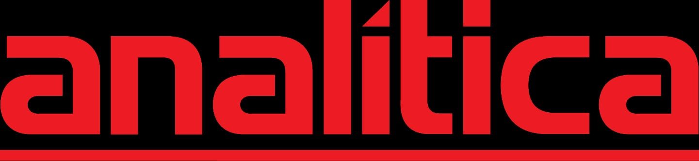
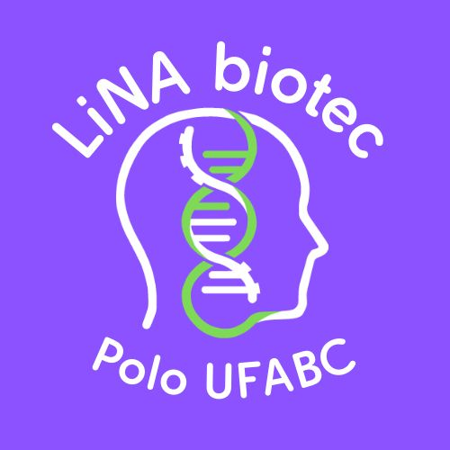

Patrocinadores



A LINA Biotech é uma entidade acadêmica voltada à promoção da biotecnologia dentro do ambiente universitário, conectando estudantes, pesquisadores e profissionais da área.
Nosso objetivo é incentivar o desenvolvimento científico, a troca de conhecimento e a criação de oportunidades por meio de eventos, projetos e experiências práticas.
Acreditamos na ciência como ferramenta de transformação e buscamos impactar positivamente a formação dos estudantes e a sociedade.
Membros ativos
Projetos realizados
Anos de atuação
